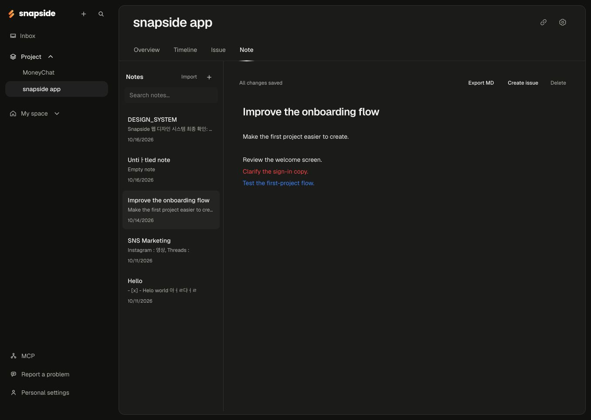
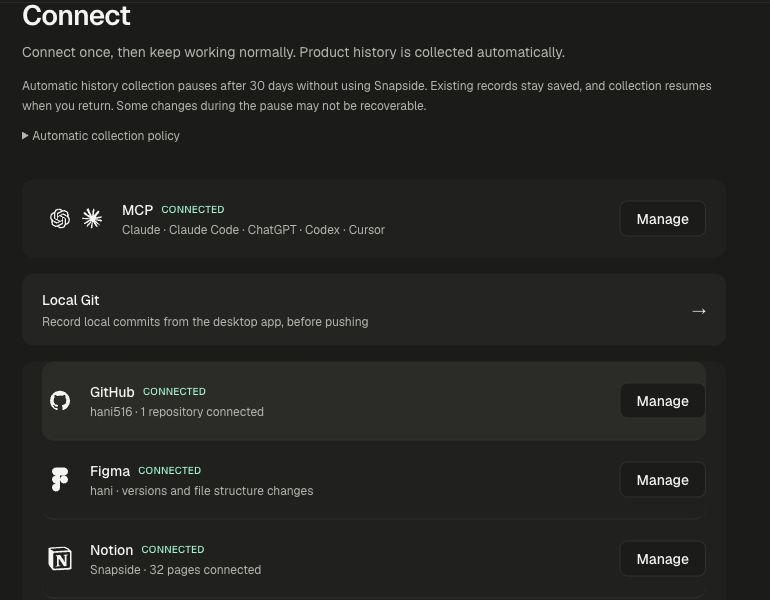
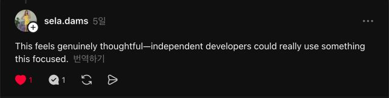
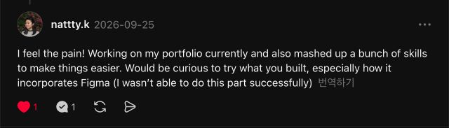

作業ごと・日付ごとに見返す
最初はLogで変更を時系列に記録するだけでした。ただ、「オンボーディング改善」のように日をまたぐ作業は、日付順では追いにくい。そこで、関連する変更を一つのWorkflowにまとめました。

03 / 03 Web app
 Snapside
Snapside
AIを使って一人で開発する人のための変更履歴ツールです。設計・開発から公開後の利用分析まで一人で担当しました。



CONCEPT / プロダクトの背景
友人とBlinqを作ったとき、変更点をNotionに残すと決めましたが、毎日は続きませんでした。一人で開発すると記録はさらに後回しになり、ポートフォリオを書くときに変更の経緯をたどれませんでした。

開発に使ったツール
最初はLogで変更を時系列に記録するだけでした。ただ、「オンボーディング改善」のように日をまたぐ作業は、日付順では追いにくい。そこで、関連する変更を一つのWorkflowにまとめました。
Overviewで全体を見渡し、Workflowで一つの作業の進捗を確認できます。ポートフォリオやサービス紹介を作るときも、AIに渡すのは該当するWorkflowだけ。全履歴を読ませるより、入力トークンを抑えられる設計です。
次は、同じ作業の変更を正しくまとめられるか、Overviewから必要な記録をすぐに見つけられるかを確かめます。
Google Analytics · 2026.09.20–11.03 · テスト利用を含む可能性があります。
全319セッション
サイト全体 · Google Analytics
0.8%250ユーザーのうち、
登録イベントを記録したのは2名。
全セッションの35.4%がThreads経由でした。

GitHubを更新しない日も、Figmaの作業が記録に残るんですね（笑）。
@buidlermason · Threads
本当によく考えられた製品だと感じます。個人開発者には、これほど目的を絞ったツールが役立ちそうです。
@sela.dams · Threads
その大変さ、分かります！私もちょうどポートフォリオを作っていて、作業を楽にするためにいろいろなスキルを組み合わせています。作られた製品、特にFigma連携を試してみたいです（私はこの部分をうまく実現できませんでした）。
@nattty.k · Threads